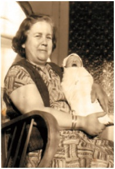

Hayatım
Bardağın dolu kısmına bakan ‘girişimci’ olur,
boş kısmına bakan ‘memur’ olur’’
Baybars Altuntaş
4
Baybars Bebek
“Para elin kiridir” denilen bir toplumda parayla haşır neşir olanlara ilk takılan lakap “Yahudi”dir. Bana da evde “Yahudi” derlerdi, ancak bu tanımlama bir küçümseme manasında değildi. Kendi yapamadıkları bir şeyi, ticaretteki başarıyı, takdir etme yöntemiydi bu.
Annem Edirneli, babam Giresunlu, ben de 27 Ekim 1970 İstanbul doğumluyum. Annem ilkokul öğretmeni, babam da askerdi. İstanbul Kasımpaşa Deniz Hastanesi’nde doğduktan kısa bir süre sonra, iki yaşında tekrar İstanbul’a dönmek üzere Edirne’ye, anneannemle dedemin yanına gönderilmişim.
Ben doğduktan 2 yıl sonra da kardeşim dünyaya gelmişti.Edirne’de o zamanlar mahallede Yahudi komşularımız olduğu için, çocukken Yahudice(İbranice) kelimeleri telaffuz edebiliyordum. Hatta anneannemim annesine “momo” derdim.
Babamlar 7 kardeş, annemler 6 kardeşti. İçlerinde bir tane dahi iş adamı yoktu. Babaannem ile dedem, her ikisi de ilkokul öğretmeniydi, annemde mesleğini kendi babasından miras almıştı. Annemin babası ilköğretim müfettişiydi. İleride ben de İngilizce Öğretmenliğini kazanarak, öğretmen olma yolunda en önemli adımı atmış olacaktım.

Anneannem Ayşe Berra Korkut’un kucağında ağlarken
Aile bireylerim, ailemizde hiçbir girişimcinin ve iş adamının olmamasına karşın benim bu kadar girişimci olmamı Edirne’ye bağlarlardı. “İki yaşına kadar Edirne’de Yahudilerin içinde büyüdü, o yüzden böyle oldu” derlerdi.
“Para elin kiridir” denilen bir toplumda parayla haşır neşir olanlara ilk takılan lakap “Yahudi”dir. Bana da evde “Yahudi” derlerdi, ancak bu tanımlama bir küçümseme manasında değildi. Kendi yapamadıkları bir şeyi, ticaretteki başarıyı, takdir etme yöntemiydi bu. İlkokulum Fındıkzade Gazi İlkokuluydu, ortaokula da Çapa Ortaokulunda gittim. Liseyi Şehremini Lisesi’nde tamamladım.
Tüm bu okullar ve evimiz bir birlerine çok yakındı. Yani, 17 yaşına kadar yaklaşık 3 kilometrekarelik bir alan içinde döndüm dolaştım.
Giresun, her ne kadar baba memleketim olsa da, biraz geç tanıştım. Dedemin kız kardeşi Arife Halamın ısrarlarıyla Giresun’a gittim ve hayran kaldım. Halam ısrarında haksız değilmiş.
Giresun, dünyanın sağlık merkezi olmaya aday ve Karadeniz’in incisi bir şehir. Kalp hastaları için havası çok iyi geliyor. Meraklısına bir tüyo vermek isterim. Giresun’da artık fındığı kavurarak pek satmıyorlar. Çünkü fındığın üzerindeki o ince zar, dünyanın en etkili anti-oksidanı olarak tespit edilmiş.Pek çok ilaç firması bu ince zarı satın alıyor Giresun’da. Bu yüzden, sakın fındığı kavurarak yemeyin, bu ince zar çok faydalı.
Arife Hala’ya da Giresun’a gittiğinizde uğrarsanız, size mısır ekmeği ile bakın ne Giresun yemekleri yapıyor... Bu kitapla giderseniz öğle yemekleri Arife Hala’dan:)
İlkokul öğretmenim annemdi. Bir yıl sabahçı, bir yıl da öğlenci olmak üzere 5 yıl beraber gittik okula. Sınıfta anneme “öğretmenim” diyordum. Sınıfta öğretmenin çocuğu olarak diğer arkadaşlarıma hep örnek olmam gerekiyordu. 60 kişilik sınıfımızda en çok laf yiyen ben oluyordum, haklı haksız. Öğretmen haksız yere bana bir şey yapsa da, eve gidip öğretmenim hakkında sızlanma ihtimalimin olmaması her halde benim için değil ama annem için büyük bir avantajdı.
Annem iyi bir öğretmen olduğu için her zaman kendisine A şubesi verilirdi. Sınıfın 308 no.lu öğrencisi olarak, hedefimiz kolej sınavlarında iyi bir okulu tutturmaktı ancak benden böyle bir sonuç çıkmadı.
* * *
İlkokul 3.sınıfa kadar babamın görev yeri olan Çerkezköy 3. Zırhlı Tugay Komutanlığı’na giderdik hafta sonları. O zamanlar kaldığımız lojmanların etrafında hiçbir şey olmadığı için, esen rüzgârın sesi beni ürkütürdü. Çerkezköy’ün, kışın buz gibi havasını hatırlayınca hâlâ iliklerime kadar titrerim. Okul haziran ayında tatil olunca tüm yaz tatilini Çerkezköy’de geçirirdik. Bol bol legolarla oynar, askeri gazinonun bahçesindeki salıncaklarda bütün yaz sallanırdık.
Babam emekli olup eve geri dönünce, evdeki yönetim şekli tamamen değişmişti. Sabahları tam 06.00’da kapımız çalınırdı ve 5 dakika içinde uyanmaz isek bir çay bardağı soğuk suyu suratımızda bulurduk. 06.15’te 10 mekik, 10 şınav ve çeşitli el kol hareketlerinden oluşan sporumuzu yapmak zorundaydık. İlkokul dördüncü sınıf öğrencisi olarak bayağı keyifsiz olan bu düzen, Pazar günleri dâhil lise yıllarına kadar devam etti. Evimizde değişik bir yetiştirme metodu vardı. Bu yaşıma kadar gözlemledim, hiç böyle bir metoda rastlamadım.
Bu disiplin ortamı, çocukça isteklerimizde bile karşımıza engel olarak ortaya çıkıyordu. Annemle babam çok istememe rağmen bana bisiklet almamışlardı ama anneannem emekli maaşıyla almıştı bana o bisikleti ve kardeşimle beni alt komşunun oğlunun bisikletini dilenmekten kurtarmıştı. Bu bisiklet hikâyesi, aslında çocukluğumla ilgili aile ortamında her şeyi özetleyen bir durum. Evdeki bu değişen şartların nihayetinde, sanırım 17 veya 18 yaşındayken, çocukluğumdan beri bir dediğimi iki etmeyen ve 2 yaşıma kadar da bana bakan anneannemin evine geçtim.
Anneannemin vefatının beni yıkması da sanırım yine çocukluk yıllarıma kadar dayanan bilinçaltı reaksiyonlardandı. Babam emekli olunca, hafta sonları Çerkezköy’e gitmek yerine farklı bir hafta sonu programı takip etmeye başladık. Önce okuldaki flüt kursuna, oradan da Anadolu Hisarındaki Marmara Üniversitesi’nin basketbol kursuna götürürdü. Ayrıca müzeleri gezerdik ailece. Müze gezileri benim için gerçek bir felaketti ama bu felaketten de iş çıkarmasını biliyordum.
Aşağıdaki hikâyeyi okuyunca, ilkokuldayken bana aile içinde “Yahudi” demelerinin pek haksız bir niteleme olmadığını anlayacaksınız sanırım.
Hattuşaş Taşına Doğru Müşteriyi Bulmak
Yıl 1981, Ankara’da Anadolu medeniyetleri müzesi açılmış, hafta sonu oraya gideceğiz. Hayatımın en sıkıntılı zamanlarını bu müze gezilerinde yaşıyorum. Anadol otomobilimize bindik, müzenin yolunu tuttuk. Döndük, Pazar akşamı hafta başına hazırlanıyoruz. Ayakkabılar cilalanıyor, elbiseler gözden geçiriliyor, ütüleniyor, defterler kontrol ediliyor.
Ertesi gün sosyal bilgiler dersi var, konu Hitit uygarlığı. Sokakta bulduğum bir taşı ayakkabılarımı cilalarken cilaladım, annemin küpe kutusuna koydum, ambalajladım. Annem de ders materyalleri ile sınıfa gelen öğrencileri pek takdir ediyor, sürekli ansiklopediler taşıyorum sınıfa.
Kim anlatacak konuyu? Sınıfın en çalışkanı Serdar kalktı, bir güzel Hitit uygarlığını anlattı; başkenti Hattuşaş’tı. Sonra bir taş çıkardı, “Konu ile ilgili bir materyal getirdim, Hattuşaş taşı” dedi. Kutuyu açtı taşı gösterdi. Öğretmen şaşkın, “Nereden buldun bu taşı?” “Öğretmenim” dedi, “Baybars satıyor...” Pazar günü ayakkabılarımla birlikte cilaladığım taşı Serdar’a Hattuşaş taşı diye dersten önce 2,5 liraya satmıştım! Öğretmenim (annem), “Hemen arkadaşının parasını iade ediyorsun, taşı alıp dışarıya atıyorsun.” Cetvelle ellerime vurdu, hemen sınıftan eve gönderdi beni, yani verilebilecek en ağır cezayı verdi. Böylece öğretmenimden ilk girişimimin karşılığını fazlasıyla almış oldum. Öğretmenim, yani annem, haklıydı; öyle bir ev ortamı ki para konuşmak ayıp bir şey, Holde bir çanak vardı, oraya para konulur, biz de haftalık harçlığımızı oradan alırdık.
Elbette bu hikâyede etik açıdan problemler var ama binlerce öğrenci Amerika’ya gidip mastır yapıp ne öğreniyor? İlkokul dördüncü sınıftaki o öğrencinin iş fikrini ve satış başarısını! Yaptığım ne? Müşteriyi doğru tespit ediyorum; satmak için 60 kişiye gitmedim, doğrudan Serdar'a gittim, alıcı o. Üstelik alacak parası var, çalışkan, bu işlere meraklı.
Öte yandan müşterimin malı alacağından da eminim. Ona uygun bir ürün ortaya çıkarıyorum, dikkatinizi çekerim. Araştırmamı yapıyorum, bu hafta derste Hitit Uygarlığı işlenecek, materyal ihtiyacı var. Müşterinin kabul edeceği bir fiyat da belirliyorum. Fiyat belirlemek bir girişimcinin en zor işidir, 10 lira desem pahalı bulabilir, 1 lira desem ucuz kalabilir. O zaman satamam; 1 lira ucuz, o zaman vardır bir yanlışı diye düşünecek; 10 lira desem o mal o parayı etmez diyecek. Yani fiyat hem cebine uygun olacak, hem de o malın o parayı ettiğine inanacak. Bir malın fiyatını belirlemek çok zor bir iş; o zor işin üstesinden kolaylıkla gelmişim. Bana maliyeti sıfır olmasına karşın 2,5 lira fiyat belirlemiştim. 5 lira da diyebilirdim ama satamayabilirdim.
Para Nakli Ameliyatlarına Erken Başladım Ancak...
Böylelikle ilk “para nakli ameliyatım”, başhekimin müdahalesi ile sonuçsuz kalmıştı.
Mezun olurken hem annem hem öğretmenim
Meral Altuntaş'ın elini öpüyordum...
Bugün bile cevabını bir türlü bulamadığım bir soru vardır orta okul yıllarıma ait. Ortaokuldayken, yani 12 veya 13 yaşındayken, gece yarısı 04.00 gibi saatimi kurar ve evde herkes uyurken gizlice camiye sabah namazına giderdim. Kafamı kurcalayan soru şudur: Evimizde namaz kılan kimse yoktu, ne evde, ne de dışarıda dini açıdan hazırlayıcı bir ortam yoktu. Kimse bana kalk da camiye git te demiyordu. Ancak, sabah ezanını duyunca kalkıp camiye gitmez isem müthiş derecede rahatsız olurdum. İşte bu rahatsızlığın sebebini hâlâ çözemedim.
Gerçi yaşım ilerleyince bu alışkanlığımı devam ettiremedim ama hâlâ ilginç bir anı olarak hafızamda yer etmiştir o günler. Hatta şunu da hatırlarım. Sızıntı diye bir dergi çıkıyordu o zamanlar. 'İnsanın Yaratılışı' diye bir makale göndermiştim o dergiye o yaşlardayken. Hem makalem yayınlanmış hem de bana bir yazı yazmışlardı. Yazıda benimle tanışmak istediklerini söylüyorlar ve Beddiüzaman’ın kitaplarını okumamı tavsiye ediyorlardı. Ne kendileriyle tanışabildim, ne de o kitapları okuyabildim. Ama yine de ilkokul son sınıftan itibaren insanın nasıl ve neden yaratıldığı konusunun en çok kafamı kurcalayan konu olduğunu hatırlıyorum.
Kendi öğrencilerimi mezun ederken de
annemin elini öpüyorum
Kolejleri kazanamadım ama, hem ortaokulda hem de lisede başarılı bir öğrenciydim. En iyi dersim de matematikti. Orta birinci sınıftan lise sona kadar her yıl matematik dersine ayrı bir matematik öğretmeni geldi. Hepsinden de 2 dönem matematik notum 10’du. Bu arada lise ikinci sınıfta, lise müfredatının dışına çıkarak yaptığım “ikinci dereceden iki bilinmeyenli denklemlerin koordinat ekseni üzerindeki gösterimlerine” ilişkin çalışmayı matematik öğretmenim bizzat alıp Gebze’ye TÜBİTAK’a götürmüştü.
Hatta, Lise 1.sınıfta matematik hocası bir müddet derslere gelmeyince, sınıf geri kalmasın diye okul idaresinin talimatıyla matematik derslerini bir müddet ben vermiştim.
Sağımda: İlkokul öğretmenim (annem),
Solumda: İlkokul öğretmenimin yani
annemin ilkokul öğretmeni
Her dönem takdirname de getiriyordum. Ancak okul birincisi olamadığımız için her karne döneminde evde “gereğince başarılı” olamadığımız mesajını hemen alıverirdik. Aldığım takdirname için annemden ve babamdan işittiğim standart tek cümle olurdu: “Görevini yerine getirmişsin.”
Ortaokul son sınıfta Kuleli Askeri Lisesi sınavları vardı. Asker olmayı çok istiyordum. Yazılı sınava Türkiye’den 5000 kişi girmişti, ben 78.oldum. Sonra sözlü sınava aldılar, sınavı geçtim. Daha sonra spor sınavına aldılar. Onu da geçtim. En son aşama Haydarpaşa Askeri Hastanesinde 10 gün sürecek olan sağlık kontrolü idi. Elimize bir kağıt verdiler; 10 günün sonunda kâğıttaki 20 doktorun da ‘Uygundur’ kaşesini alırsanız, gidip kaydınızı yaptırıyorsunuz. 9.günün akşamı tam 19 doktorun uygundur kaşesini toplamışım. Sadece 1 doktor kalmış. O kadar sevinçliyim ki, Teğmen’lik hayalleri kurarak yattım uyudum. Ertesi günü sabah 10 da heyete girdim, ve sonuç: Uygun Değildir !
Şok olmuştum. Bel kemiklerimin arası 1 mm yerine 2 mm açıkmış. Doğuştan gelen bu ortopedik durumdan dolayı ileride ağır yük kaldıramayacağım vs sebeplerle elendim.
Günlerce ağlamıştım. İşin ilginç yanı, Kuleli Askeri Lisesi’nin komutanı da babamın devre arkadaşıydı. Hatta oğluyla beraber tüm sınavlara beraber girdik çıktık. Babam ‘hayırlısı’ diyerek, torpil yaptırmadı ve Şehremini Lisesi’ne kaydımı yaptırdım.
Yoksa şimdi size ‘Bir Kurmay Albayın Anıları’ diye bir kitap yazıyor olacaktım:)
Çocukluğumun en favori kırıntıları. Bunları belki sizler de hatırlarsınız. Ne kadar çabuk geçmiş yıllar !
Cuma akşamları 19.00 : Heidi
Her akşam 20.00 : Uykudan Önce. Adile Naşit ismimizi söyleyecek mi bakalım ?
Cumartesi günleri saat 16.00 : Tatlı Cadı
Pazar sabahları saat 10.00 : Amerikan Western Filmleri
Turgut Özal’ın KDV reklamı : Önce alışveriş, sonra fiş !
Doğru Ahmet’le Bay Yanlış !
Pazar akşamları 23.00 : Dallas – Ceyar – Sue Allan – Boby – Bay Yuing
Eurovizyon Şarkı Yarışması: Çetin Alp’ten İşteeee Operaaa, Ajda’dan Aman Petrol
Pazar akşamları Şahin Tepesi
Pazar günleri Bonanza
Cuma akşamları 19.00 : Şeker Kız Candy
Milliyet Çocuk Dergileri
Pamukbank Çocuk Sinemaları
İş Bankası Kumbaraları
Çocuk filmi : Şampiyon
Cumartesi öğleden sonraları : Uzay 1999
Jaws
Baretta, 1 milyon dolarlık adam, Komiser Colombo
Küçük Ev, Laura Ingıls
Evet-Hayır Yarışması.Başınızı emme basma tulumba gibi sallamayın.
Yılbaşında 23 50 Nesrin Topkapı, 24 00 Zeki Müren
Çocuk Kalbi
Kung Fu
Ayşegül kitap serisi
Pinokyo
İstiklal Marşı ile kapanan televizyon yayını
Red Kit ve Dalton Kardeşler
Tom & Jerry
Tommiks, Teksas, Mister NO
Bütün Dersler Kitabı
Tombul Matematik Dergisi
Hop hop, değiş tonton
Beyaz Gölge – Basketbol takımı
Almanya’dan gelen resim defterleri, boya kalemleri
Her sabah andımız
Beslenme sepeti